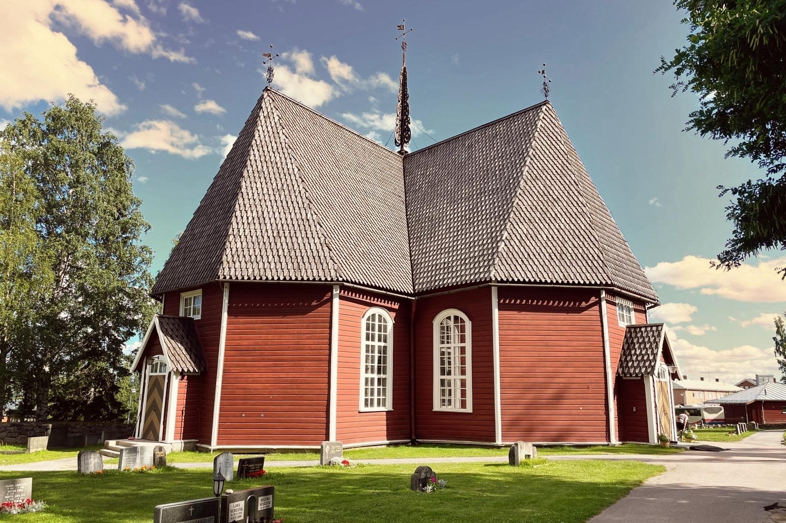
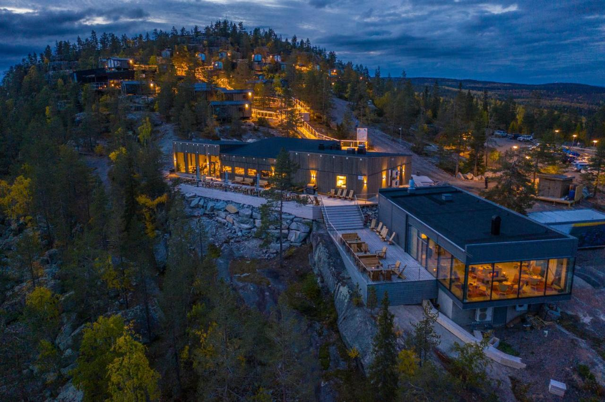

We’re happy to invite you to celebrate our day with us. On this page you’ll find all the important wedding details – from the venues and how to get there to accommodation, RSVP and gifts.
Date & Location
25 July 2026
Ceremony: Matarengi Church at 15:00 (Finnish time)
Reception: Lapland View Lodge
Matarengi Church
Matarengi Church (Swedish: Övertorneå kyrka) is located in the center of Övertorneå in northern Sweden. This beautiful historic church was built between 1735 and 1737 and is one of the best-preserved 18th-century churches in the region.
The church’s timeless atmosphere, complemented by Sweden’s oldest pipe organ still in use, creates a dignified and memorable setting for the wedding ceremony.
Lapland View Lodge
Lapland View Lodge is located on Luppioberget hill, just outside Övertorneå. Built in harmony with the surrounding nature, this scenic hotel is open year-round and offers a stunning setting for a wedding celebration.
The two main buildings house the reception, restaurant, bar, and a cozy lounge with a fireplace. Adjacent terraces provide beautiful views over the surrounding landscape.
The restaurant serves dishes prepared with locally sourced ingredients. The hotel buildings, spa area, and 40 cabin accommodations feature large windows that offer breathtaking views over the Tornio River Valley and the vast northern scenery.
Why especially here?
Mount Luppio is not only the childhood hiking destination of Satu, but it also perfectly mirrors Ville's inner landscape with its views of the Tornionjoki River and the surrounding hills. Additionally, it is located almost exactly halfway between the childhood homes of the couple (Satu 67 km and Ville 62 km), making it a pretty good compromise in terms of location!
How do I get there?
Matarengi Church: Matarengivägen 31, 957 31 Övertorneå, Sweden
Lapland View Lodge: Luppio 202, 957 91 Övertorneå, Sweden.
More infoYou can also follow the signs below after crossing the Aavasaksa bridge to the Swedish side.
Accommodation
There are several accommodation options near the venue – here are the couple’s recommendations.
Lapland View Lodge
Lapland View Lodge is the reception venue, and the couple will stay here.
Lapland View Lodge offers high-quality accommodation in cabins with large glass windows. A spa area and sauna with stunning views are available for an additional fee.
If you choose to stay here, the prices below apply when you use the code MEÄNHÄÄT when booking.
Standard Cabin (max 2 people): ??? SEK/night
Premium Cabin (max 2 people): ??? SEK/night
Family Cabin (max 4 people): ??? SEK/night
Family Premium Cabin (max 4 people): ??? SEK/night
For more information, click here.
Matarengi Lodge
Matarengi Lodge offers high-quality hotel accommodation in the center of Matarengi, about 10 km from the venue. The hotel has a spa area and sauna. From the reception venue you can get there easily, for example by taxi.
If you choose to stay here, the prices below apply when you use the code MEÄNHÄÄT when booking.
Double Room (max 2 people): ??? SEK/night
Double Room with balcony (max 2 people): ??? SEK/night
Family Room (max 4 people): ??? SEK/night
For more information, click here.
RSVP
Please use this form to RSVP.
A Little Note on Gifts
We already have everything we need at home. Having you with us on our special day is truly the best gift we could ask for.
If you’d still like to give something, a small contribution to our honeymoon fund is more than enough — but please know it’s entirely optional. Satu Peura
BIC: SBANFIHH
IBAN: FI51 3939 0035 0660 67